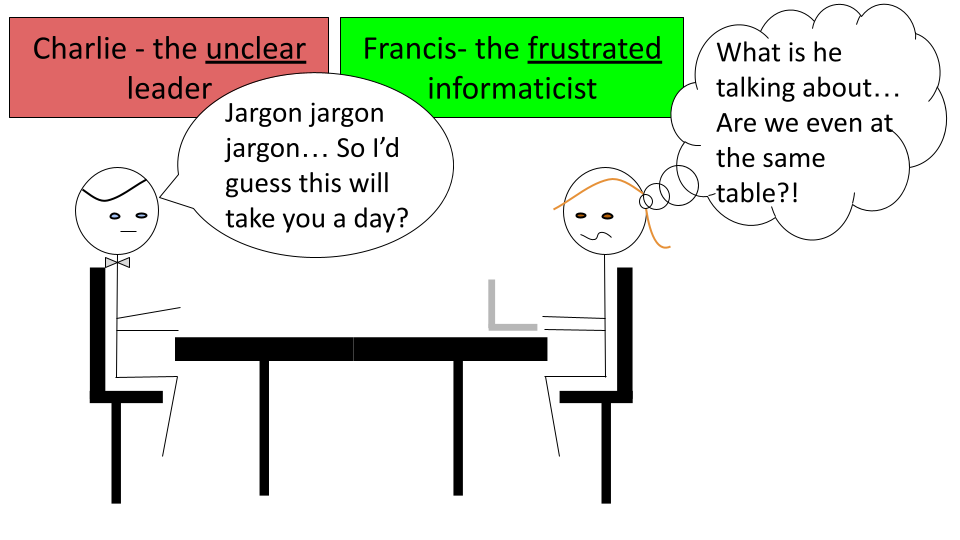
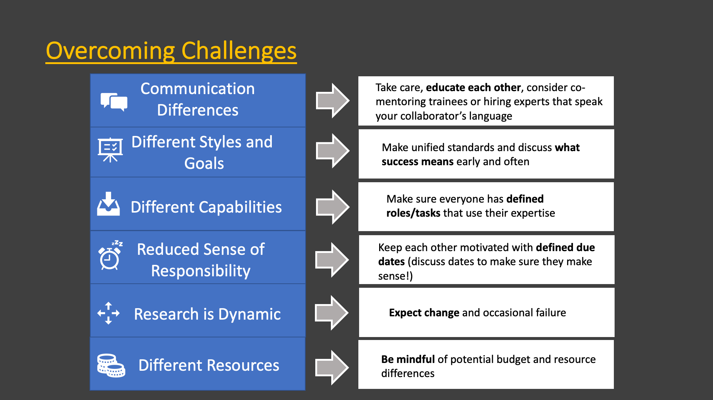

Chapter 4 Informatics Relationships
Learning Objectives: 1) How to mitigate challenges for collaborating on multidisciplinary informatics projects 2) How to mitigate challenges for employing informatics experts 3) How to best support mentees in cross disciplinary teams 4) How to support a diverse lab team
4.1 Cultivating Good Multidisciplinary Lab Relationships
Now that we know a bit more about general practices for maintaining successful multidisciplinary teams and projects, we are going to take a deeper look at how to best support the relationships that might we might have in our team. We will also discuss the pros and cons of each type of relationship to better guide you about decisions regarding building your team.
4.2 Collaborating with Informatics Experts
Studies investigating biology research labs over history indicate that collaboration has been on the rise since the 1950s [1] and that the rate continues to increase [2]. Indeed the size of biology research teams appear to have doubled from 1955 to 1990 [1]. But why?
4.2.1 The benefits of collaboration
- Shared cost - Research often involves expensive technology, thus it is cost effective to share resources.
- Shared expertise - Now that technology affords answering in some cases more complex or broader research questions, it is often more effective to employ multiple contributors with different knowledge, skills, and perspectives. Researchers have noted that their own concept of their field changed as a result of working with investigators from other disciplines. Thus this can lead to innovation [3].
- Shared burden - Doing part of the work for a project using the knowledge and skills that you are most comfortable with and seeking help from others who are more knowledgeable on other research aspects can be a more efficient strategy.
- Shared reliability - Including multiple team members who can each evaluate the research can improve the reliability of a project, as mistakes can be found by other members.
- Shared credibility - Collaborations involving experts of multiple areas can improve the perceived credibility of the work by others.

4.2.2 Potential Challenges
There are always challenges when collaborating with others, but some of these are particularly enhanced in multi-disciplinary teams. Here are some challenges that you may encounter when a collaboration involves informatics experts.
Good Collaboration:

Bad collaboration:

- Communication Differences - Extra care needs to be taken to ensure that communication across groups is effective.
Typically researchers will not meet as often with a collaborator as they would with an internal team member. Therefore, poor communication in a collaboration can lead to more costly misdirection and thus wasted time and effort.
Furthermore, as investigators often have different backgrounds, differences in jargon and language can make communication more challenging.
Having internal team members with some familiarity with informatics can be very beneficial for translating discussions with collaborators who are informatics experts.
One solution to this is to have trainees work in both labs. This can be especially beneficial for the trainee who will become accustomed to two research styles and will learn a diverse set of skills, allowing them to potentially have their own multi-disciplinary lab in the future [3].
Another important method that can help resolve this issue is to have members provide educational seminars for participating members about the fundamentals of their work.
- Different research style and goals - Beyond differences in language, differences in research style and goals can lead to conflict.
“Scholars’ different styles of thought, standards, research traditions, techniques, and languages can be difficult to translate across disciplinary domains.” [3]
Making clear research standards and goals, as well as outlining clear specific tasks at the beginning of a project can help to avoid this issue. Furthermore, meeting consistently throughout the duration of a project can also help to make sure that standards are maintained. Additionally, these meetings should include discussions about intellectual property, authorship, leadership, and defining what success looks likes to each of the various members. Defining these details early can avoid major conflict later.
Furthermore, it is critical to keep in mind the diversity of career goals of research team members, as junior team members may have a challenging time persuading others of their independence and contributions when they work on largely collaborative projects. It is also necessary to ensure that junior members have time to devote to their own research programs. [2] Support should be provided for these junior collaborators by more senior collaborators.
- Different capabilities - Research of multi-disciplinary collaborations has revealed that when collaborating members are unclear of how their expertise and work contributes to the project, they are less motivated and fell less valued.
Working with members of different backgrounds to determine how their expertise can contribute to the project, as opposed to simply assigning them a task, will not only help with morale, but it can also better define how a collaborator can further contribute to a project in ways that you may not already expect [3].
- Reduced sense of responsibility - Another concern of collaboration is that team members may feel less responsibility or commitment to a project than for a project within their own lab.
Defining tasks and expected due dates can help reduce this issue. Discussions to establish due dates should always include team members with expertise in each area of science, as tasks may not take the amount of time that another researcher would expect. It is a common misconception that informatics tasks take less time than the tasks actually take in reality.
Research is dynamic - Research always has an element of trial and error. Protocols may change and new scientific questions may emerge. Frequent meetings with all group members to understand the dynamics of the project are critical. Furthermore, flexibility and understanding is required. It should be expected that aspects about the project will change.
Different levels of resources - Particularly when collaborating with community members, community colleges, and institutions that are “Equity-oriented” serving populations that have historically been marginalized or “minoritized” [4], it is important to keep in mind that large differences in resources may exist between collaborating members.
Sharing and discussing budget information early and often can help research members to understand what expectations are reasonable and how collaboration partners may best assist one another.

4.2.3 References
Vermeulen, Niki, John N. Parker, and Bart Penders. “Understanding Life Together: A Brief History of Collaboration in Biology.” Endeavour 37, no. 3 (September 2013): 162–71. https://doi.org/10.1016/j.endeavour.2013.03.001.
Sonnenwald, Diane.“Scientific collaboration.” Annual Review Of Information Science And Technology. 41 (2007): 643-681. https://www.researchgate.net/publication/220040763_Scientific_collaboration.
Mäkinen, Elina I., Eliza D. Evans, and Daniel A. McFarland. “The Patterning of Collaborative Behavior and Knowledge Culminations in Interdisciplinary Research Centers.” Minerva 58, no. 1 (March 2020): 71–95. https://doi.org/10.1007/s11024-019-09381-6.
Blake, Daniel. “The Case for Rebranding Minority-serving Institutions.” DiverseEducation.com (January, 17, 2017) https://diverseeducation.com/article/91247/.
4.3 Employing informatics experts
In contrast to collaborating with informatics experts, in some case it may be beneficial to directly employ them on your team. There are again pros and and cons for this strategy.
By directly employing informatics experts, rather than collaborating with an expert, research leaders will have more access to meet with these experts more often. Research leaders may also have more sway in terms of guiding the direction of the experts’ work. Leaders can also potentially grow the informatics part of their research program more readily, leading to even more flexibility in the research questions that they may be able to assess.
However, direct employment of informatics experts requires all of the typical responsibilities and costs of employing another lab member. It also requires the additional resource requirements for the informatics work of the particular expert. This will be discussed more in a later section of this course.
In addition, it is useful to become familiar with best practices for ethics, reliability, and reproducibility in computational work. This requires some different tactics than that of experiment based research (often called “wet lab” research). Although it is also useful for informatics experts to keep track of the work that they have performed in general, similar to maintaining notes about experimental research with a lab notebook, a much deeper level of detail can be tracked and maintained for computational work. What we mean by this, is that the actual code and data used in their work can be saved over time. This can be invaluable for research reproducibility. Thus research leaders are advised to become familiar with best practices for data sharing and data management so that they can most effectively manage their informatics employees. This is also discussed in more detail later in the course. Furthermore, it is very important to avoid issues that can happen if you employee a single bioinformatician that will be isolated from other informatics experts.
One other important thing to remember is that informatics work is often best performed with long stretches of uninterrupted time. This will be true for your informatics employees and mentees.
Again we suggest that you work with your informatics teammates when you schedule lab meetings and be mindful of their other time commitments. Try to support them in scheduling several hours of uninterrupted time a day if possible.
4.4 Mentoring informatics students
Mentorship is a particularly unique relational experience. While traditional mentorship has been defined by the hierarchical structure of a single mentor who teaches subordinate mentees, new styles have emerged that are not as constrained or limited as the traditional paradigm. At its optimum, mentors and mentees should learn from each other and together and expand what each can do alone. Importantly the more traditional paradigm that does not value “reciprocal learning” as highly, has been shown to be less effective for a larger diversity of students.[1]
For research groups that are newer to informatics, some of these less traditional paradigms may be especially useful, we will focus on a few here.

Alternative Montorship
4.4.1 Co-mentoring/Collaborative/team mentoring
As we described earlier, co-mentoring or collaborative mentoring of students by multiple mentors with different backgrounds can be particularly beneficial to the student and also to the partnering labs. In the case of collaborative mentoring where a mentee is mentored by two research experts in two different labs, this provides an opportunity not only to strengthen a collaboration, but also for students to gain more diverse knowledge, and to in turn provide more of the expertise that they gain back to both labs. Co-mentoring could also occur within the same lab by a research leader and an informatics expert. This could also work well in a multilevel paradigm, where an informatics expert may guide informatics related aspects of research, while an overarching research adviser may guide the student’s overall research mentorship experience.
4.4.2 Peer mentoring
Peer mentoring also provides great opportunities to expand students’ expertise and skills without as much time constraints for the research leaders of a lab, particularly for skills that may be new to lab leadership. Furthermore, such paradigms are helpful for improving students’ teaching skills, collaboration skills, self-reliance, and self-confidence. Teaching a peer is often useful for students to identify gaps in their own knowledge, and assisting in their quest to “learn how to learn” [1]. Furthermore, such paradigms appear to be especially beneficial to students of historically marginalized populations.[1] However, there are challenges for research leaders from a management standpoint. Mentors should be mindful of any conflicts that may arise between students. These can often be avoided with clear and distinct goals and projects for students, to avoid making students feel like they are competing with one another. Additionally, we highly recommend establishing a code of conduct for the lab, so that students and staff members are clear about what behavior is expected.
4.4.3 Electronic mentoring
With the COVID-19 pandemic, the transition to using electronic means of contact with students and staff for research has expanded on an unprecedented scale. It is unclear currently how much this will continue in the future. However, research prior to the pandemic has shown some surprising benefits of providing mentorship through electronic means. Importantly it appears that this eases burdens for students who are balancing course work, as it often provides more scheduling flexibility. Additionally, such mentorship is particularly helpful for historically marginalized populations who may face more hostility by going to research institutes with face-to-face interaction with others or may have additional scheduling conflicts. Even as we may return to more on-site research labs, additional availability by mentors with mentees using electronic means of contact are likely to be beneficial. Technology such as slack can be especially useful for allowing lab members to interact with one another. We will cover more about this soon.
4.4.4 Career goals
The job landscape for scientists has changed in recent decades with more opportunities outside academia in industry and government. Furthermore career goals for informatics mentees can be very different than that of other research mentees. By having informatics expertise, these trainees have additional career opportunities.
Becoming aware of these opportunities yourself, as a research leader, is therefore critical for cultivating your mentees’ awareness of the diversity of opportunities available to them. This will ultimately allow your mentees to choose the career path that suites them best.
4.4.4.1 Career Paths for Informatics Mentees
Academia - Your informatics mentees may have career opportunities as principal investigators, scientists, or educators just like other cancer biology mentees. In addition to opportunities as educators for informatics and biology, they will also have opportunities for data science.
Government - Your informatics mentees will may have career opportunities as scientist or policy maker for research institutes just like other cancer biology mentees. However, additional agencies and institutes may have a need for their data science skills on topics outside of biology. For example your mentee may have the skills to work for a city police department.
Industry - Beyond the potential career options in the pharmaceutical industry, biotech, and medicine, your informatics mentees will have data science skills that may qualify them for jobs in a variety of industries. For example your informatics mentees could find jobs at companies such as Stitch Fix or Ancestry which use methods in machine learning and bioinformatics for their products. Additionally, your mentee may also have opportunities to join a software company as a computer programmer or even as a programming educator at a company like RStudio.
Nonprofit - Beyond research and management positions at nonprofits performing scientific or clinical research, informatics mentees may have opportunities at other nonprofits with other types of goals. For example, your mentee might find work at a nonprofit that advocates for civil rights and investigates social interactions in social media platforms.
According to Brandon Rohrer, a data scientists who formerly worked at Facebook and now works at iRobot, there are 4 major categories of knowledge and skills for data science:
- Data Analysis - domain knowledge, research skills, and interpretation skills
- Data Modeling - machine learning application skills, algorithm development skills
- Data Engineering - data management skills, skills to make code production-level ready (ex. automation), software engineering
- Data Mechanics - data formatting and cleaning, data handling (filtering, subsetting)
Archetypes of data scientists:
- Beginner data scientists - exposure in each of the 4 areas - ideally how your mentee will be after training at a minimum if their goal is to pursue a data science career
- Generalist - proficient in all areas - data science manager or executive - good for mentees who wish to stay in research!
- Specialists
- Detective - strong in data analysis and mechanics and exposure in all 4 areas
- Oracle - strong in modeling and mechanics (great for machine learning companies)
- Maker - strong in mechanics and engineering
AVOCADO - add more about this https://www.manning.com/books/build-a-career-in-data-science
Major skill sets to focus on according to the “Build a Career in Data Science” book by Emily Robinson and Jacqueline Nolis: 1) statistics 2) Machine learning 3) programming (python and R) 4) projects - hands on experience
https://blogs.oracle.com/datascience/how-to-survive-your-data-science-interview
" When looking for jobs.. ignore job titles, dont pay too much attention to specific tools or languages…pay attention to the skills that are being asked for"
4.4.5 Refrences
- Mullen, Carol A., and Cindy C. Klimaitis. “Defining Mentoring: A Literature Review of Issues, Types, and Applications.” Annals of the New York Academy of Sciences 1483, no. 1 (January 2021): 19–35. https://doi.org/10.1111/nyas.14176.